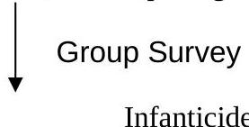

🏥
Topic 01
MEDICAL SOCIOLOGY
01
Relevance.
- It is a recent historical development paradigm.
- Relates all other fields of medicine i.e. focus on integrative analysis of interrelationships of system analysis. (Culture, history, politics, economy environment population, behaviour, nutrition, natural resources, education, heredity) Biological agents, psychological, economy, environment, spiritual, politics, education, culture.
Looking at health determinants in a causal manner. Focus on integrating analysis.
02
Introduction
- Health and disease as universal concepts
- Health and disease as cultural concepts
03
What is Culture
🍌
Nano Banana says: Culture is like the peel that shapes us! It's specific to our group and influences how we behave.
- Shared ideas and meanings
- Knowledge, beliefs, arts, customs, morals and practices acquired through socialization.
- Specific to a given group of people.
- Influence behaviour patterns e.g. F.G.M.
04
Determinants of culture (SEMI)
- Socialization
- Environment
- Modification
- Interaction cultural
05
Acculturation
where you accept other things into your culture modification
- Impact social change.
- Role of new religions
- Urbanizations
- Culture adapting with regard to the living environment
- Borrowing as a survival skill.
06
Cultural relativism
- Understanding cultures (behaviour and practices) within their own standards and values.
- Assumption of cultural action as natural
- Relevant to concepts disease causation.
- Stereotypes labels others according to their own cultural groups instead of accepting.
- Ethnocentric judging others by our standards. Opposite of cultural relativism.
07
Ethnocentrism
- View other peoples ways of life in terms of ones own cultural assumptions, customs and values.
- Judgmental
- Superiority complex
- Stereotypes
- Relevant for the practice of medicine e.g. Traditional and modern medicine.
- Affects perception of certain illnesses.
08
Approaches/explanatory models to disease causes:
🍌
Nano Banana Analysis: Disease isn't just biological! It has personal and ecological layers too.
-
Anthropological / Emic / Personalistic
- Emic based on cultural ideas of disease causation that are largely personalistic
- Importance of contextualization and meaning e.g. FGM- understand cultural basis for it despite medical implications. Perceptions of the illness e.g. Aids as curse.
-
Biomedical / Etic / Naturalistic
- Etic based on the biomedical model that is largely naturalistic (germ theory).
- Based on developments in natural science. Makes doctors universal due to standard training.
- Illness explained in impersonal and systematic terms (can confirm by laboratory bests)
-
Ecological (holistic)
Ecology of human disease as a factor of:
- Environment
- Settlement patterns
- Population size
- Production and reproduction patterns.
09
Illness and Health as Cultural Phenomena
- Origin in peoples living and working conditions (environment, gender, lifestyle, poverty etc).
- Explanation of causation and labeling engendered in culture i.e. attribution of ill health to witchcraft, evil eye, taboo and transgression (example of malnutrition, supernatural forces).
- Experienced in a way that is influenced by cultural ideas i.e. whether harmless or serious.
10
ECOLOGY OF HEALTH AND DISEASE
- Medical anthropology uses multidisciplinary research approaches to study health in a variety of environmental and cultural contexts.
- Medical ecology considers health to be a measure of how well a group has adopted to the environment.
- What resources do they have to deal with health problems?
- To keep health survival of the group.
11
Human Ecology as Cultural Adaptation
- Flexibility and refinement of behaviour
- Modifies and reconstructs the environment.
- Response to environmental alterations.
- Culture forming capacity.
- Cultural borrowing as a survival strategy.
Existence on a scale
- Dependence on natural resources modified resources.
- Dominance of the environment (industrialization)
2
- Good collection/ gathers
- Agricultural/pastoralists
- Highly industrialized
- Each case demonstrates behavioral pattern (positive/negative to health)
12
Cultural adaptation and Health
- Practices and unintended benefits.
- Breastfeeding
- Postpartum taboos.
- Adaptation function of birth spacing

Fig. 1.1: Infanticide and Senilicide
Infanticide
Senilicide
13
Traditional practices that affect Health
-
Rites of passage i.e. FGM FGC - Has culture meaning relevance but may also be detrimental to health.
-
Wife sharing among age mates.
- A cultural norm but may exacerbate spread of infections.
- Wife inheritance.
-
Birthing practices
- Use of dung on umbilical cord
-
Food habits
- Intra household food distribution.
- Good taboos
14
HEALTH SEEKING BEHAVIOUR
- A decision making process
- What people do when they define themselves or by other as sick.
- Main actors.
15
Factors that influence health care seeking
- Acceptability culture allows
- Availability
- Accessibility physical cost.
- Affordability
- Quality of care.
16
Pattern of resort
- Magnitude of the problem is it serious or not?
-
Thus:
- self medication
- Consult friends
- Traditional health providers
- Allopathic health services
17
Doctor patient interaction and use of health services
- Initial encounter
- Patient perception of the service provider (SP).
- Service provider (SP) perception of the patient classes.
- Provider attitude changes according to who is being dealt with.
- Labeling point considered to be the cause of the disease.
- Working environment resources
- Facilities
- Time and workload.
- Private versus public environment clean, spacious in private.
- Importance of positive short period patient interaction.
- Communication nature of interaction.
- Structural explanation social status
- Language
- Social distance issues of disclosure doesn't usually tell illiterates what they're suffering from.
- Labeling
Conclusion
- Current use of health services is concurrent (many at a go) and situational.
- Service users as pragmatic going for what works until it is too late.
18
THE CONCEPT OF DEVELOPMENT
- Aggregate economic growth (GNP)
-
Development:
- Enhancement of self-esteem.
- Liberation from poverty.
- Capacity building skill development.
- Changes in socio-cultural and economic structures.
- Modernization synonymous to development.
- Modernization replacement of individual values with more rational, scientific and efficient ones.
-
Traditional values:
- Kinship, communal ownership of resources obstacles to the individual initiative.
- Indigenous structures as constricting rather than building blocks of development.
-
Development approaches (post 2nd world war)
- Injection of capital and investment
- Erosion of traditional obstacles.
Consequences
-
Economic
- Employment
- Incomes
- Social
-
Health implications
- Related to changes in the environment.
- Dietary.
-
But also health problems related to development due to:
- Overcrowding
- Pollution
- A constriction in diet expensive goods.
19
Large-scale development projects
- Development projects are meant to improve the standard of living in developing countries.
- At first, surprising that they are responsible for diseases in the respective areas.
- Supposed to provide technological solutions to the problems of developing countries.
Examples:
- Mwea irrigation scheme (Rice) schitosomiasis.
- Sugar plantation in Kenya.
- Monoculture pockets of malnutrition—monoculture is a focus on cash crops but they do not focus on food crops therefore malnutrition in the family.
- Cutting of forests in North Brazil for agriculture
- Open pools of stagnant water increases in malaria
- Creating of Lake Volta in Ghana for fishing increases of schistosomiasis.
- Relocation of population.
- Implications of food security.
- Implications for health.
- Monoculture is the irony of development. Had also payment of cash crops is not regular e.g. Sugar plantations in Kenya especially if it is the only source of income for the farmer there will be economic problems.
- Social problems arise when farmers are given bonus payments after a long time of not having money e.g. Spread of AIDS etc diseases of development, polygamy, family disruption, spread of STDs etc.
- Disease of development due to eating more expensive foods like meat therefore diseases e.g. Gout, hypertension, obesity, cancers.
20
Management of development
- Decentralization of industries to prevent overcrowding.
- In large scale plantations, part of the land should be used for food production.
- Industries should be prevented from pouring industrial waste into the environment. E.g. Rivers.
- Health education to those people on good diet i.e. maintains traditional practices e.g. Diets are good.
Knowledge Check
Test Your Understanding
Complete this quiz to assess your comprehension of Medical Sociology.
Loading quiz...